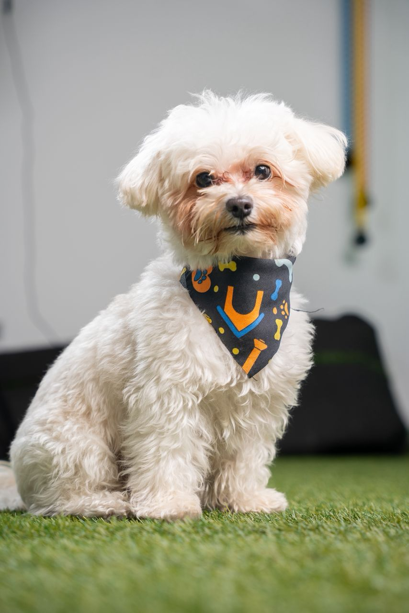

🐾 TOMMY está perdido

TOMMY
Poodle • Muy amigable y nervioso
Información
🎂 Edad
4 años
🍖 Comida
Pollo • Brócoli • Zanahoria • Carne molida
💊 Salud
Sin condiciones médicas
👩 Dueña
Ale
📍 Ubicación
Aqui tu ubicacion
💬 Contactar por WhatsApp